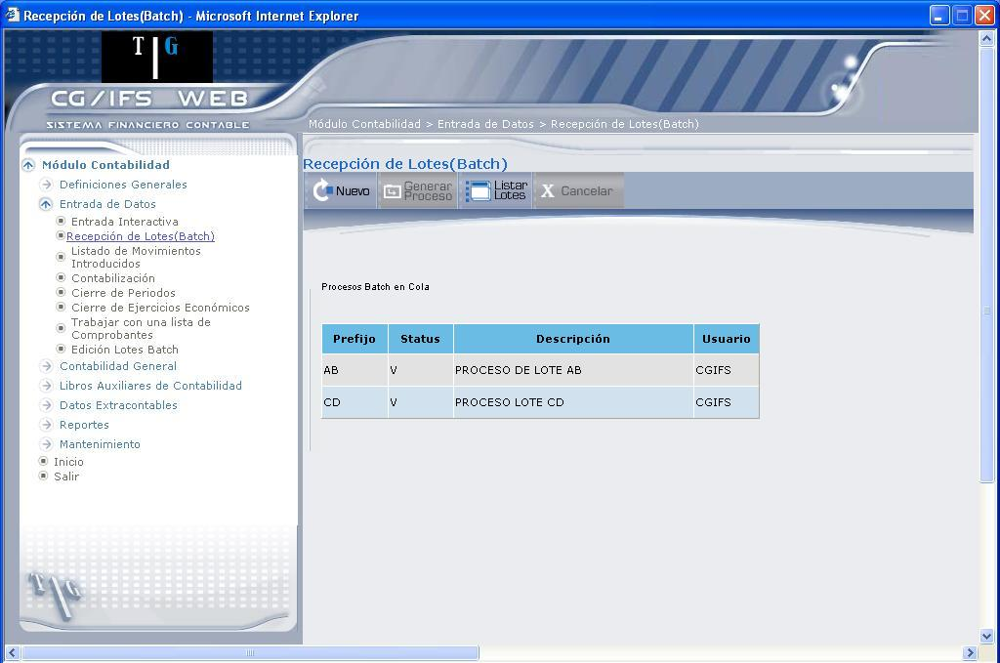
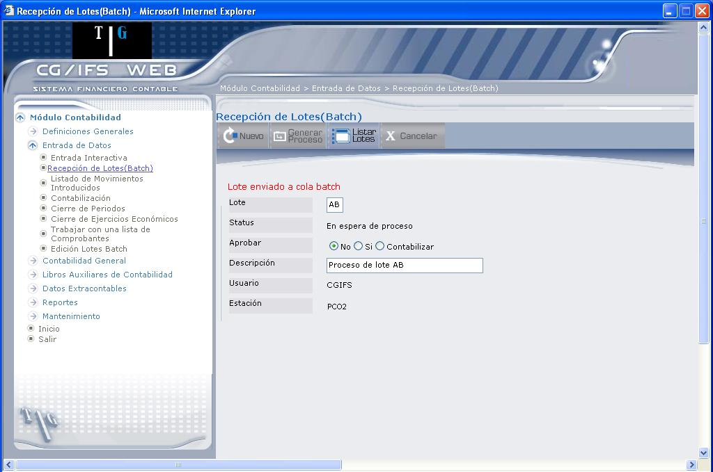

Recepción de Lotes (Batch)
El acceso a esta opción requiere que el usuario tenga las mismas autorizaciones que para la entrada interactiva de comprobantes, con la diferencia que debe tener acceso a la entrada de comprobantes batch para la clase de elemento Compañía o para la clase de elemento Grupo de Compañías, en lugar de la autorización a Entrada de movimientos para estas mismas clases de elemento que debe tener en la entrada interactiva.
Esta opción permite adicionar en CG/Web datos que han sido creados por otros sistemas. Al igual que en entrada interactiva, dichos datos deben estructurarse en forma de comprobantes, cada uno de los cuales está compuesto de un encabezado y uno o varios movimientos.
El conjunto de la información a adicionar forma un LOTE DE COMPROBANTES, el cual está identificado por un prefijo de dos caracteres. Esta opción admite la solicitud de entrada batch de múltiples lotes y el reciclaje de los errores detectados.
En cualquier momento pueden ser visualizados los lotes que se encuentran en cola. Sólo uno de ellos está en proceso y el resto está en espera. El sistema permite eliminar la petición de entrada de un lote siempre que no se haya iniciado su proceso.
Al ingresar a esta opción se despliegan los Procesos Batch en Cola, como muestra la pantalla que presenta 1.17.

Figura 1. Entrada Comprobantes Batch
BOTONES
AGREGAR NUEVO LOTE
Para poder adicionar Comprobantes con status aprobado, el usuario conectado debe estar autorizado a aprobar Comprobantes para y el tipo de Comprobante que se hayan definido. En el caso de existir Comprobantes a los que no se esté autorizado para aprobar se adicionan, si no contienen errores, sin aprobar.
Para agregar un nuevo lote, presione el botón , el mismo que despliega la pantalla que muestra 1.18.

Figura 1. Entrada Comprobantes Batch – Agregar nuevo lote
Los campos que se ingresan son los siguientes:
Lote:
Digite el prefijo del lote a añadir. Corresponde a los dos primeros caracteres del nombre de los archivos que contienen los Comprobantes que serán procesados. Si se deja en blanco se asume ´GL´. Sólo el usuario CGIFS puede añadir un lote con prefijo reservado. Son prefijos reservados AF, DA, DB, DC, DE, DF, DG, DH, DI, DJ, DK, EF y PR.
Status:
Despliega el estado del lote. Durante el proceso de un lote, éste pasa por los siguientes estados:
EN ESPERA DE PROCESO: Este estado es asignado al lote cuando se añade a la cola de lotes a adicionar. Indica que todavía no ha comenzado su proceso.
EN CONTROL PREVIO A VALIDAR: Se inicia el proceso del lote. Se comprueba que los archivos de Comprobantes a adicionar contienen datos y que los archivos de errores están vacíos.
EN VALIDACIÓN: Se valida la información a adicionar de forma similar a la entrada interactiva. Si existen errores y no hay archivos para errores se termina el proceso del lote una vez concluida esta fase.
EN EXTRACCIÓN DE COMPROBANTES: Si hay errores y existen los archivos de errores, se transfieren los Comprobantes incorrectos a dichos archivos y los Comprobantes correctos se adicionan a los archivos de CG/Web. En el caso de que no existan los archivos de errores no se adiciona ningún Comprobante a los archivos de CG/Web mientras no sea todo el lote correcto. Una vez terminada la extracción se genera el listado impreso Validación de Comprobantes, con el detalle de los errores detectados, si los hubiera. Si no se detectan errores se genera un listado con el texto "No se detectaron errores"
EN ADICIÓN: Si existen Comprobantes sin errores se adicionan a los archivos reales de CG/Web. Si se producen incidencias en la adición se genera el listado impreso Reporte de incidencias en la adición
ESTA FINALIZANDO EL PROCESO: Significa que se completó la adición y terminó el proceso correctamente. Los datos adicionados son borrados de los archivos, quedando estos últimos disponibles para ser utilizados en una nueva entrada batch. Se genera el listado impreso Reporte de control de entradas de comprobantes en batch
Aprobar:
Seleccione una de las siguientes opciones, según corresponda.
- Marque el casillero ´No´ para que los comprobantes sean adicionados con estado No Aprobado.
- Marque el casillero ´ Si´ para que los Comprobantes sean adicionados con estado Aprobado.
- Marque el casillero ´ Contabilizar ´ para que, una vez adicionados los Comprobantes, se someta a batch una contabilización de los Comprobantes de lote.
Descripción:
Digite la descripción del nuevo lote.
Usuario:
Despliega el código del usuario que ingresa los comprobantes en batch.
Estación:
Despliega el código de un PC cliente específico, desde el cual se ingresan los Comprobantes.
Los campos Aprobar y Descripción solo están habilitados como de entrada/salida si el estado del lote de comprobantes es: ´En espera de proceso´ y es el mismo usuario de CG/Web que solicitó el lote al que está conectado.
Tome en cuenta las siguientes autorizaciones para adicionar o contabilizar un lote de Comprobantes.
Autorizaciones:
- Para poder adicionar Comprobantes con estado aprobado, el usuario conectado debe estar autorizado a aprobar Comprobantes para y el tipo de Comprobante que se haya definido. En el caso de existir Comprobantes a los que no se esté autorizado para aprobar se adicionan, si no contienen errores, sin aprobar.
- Para poder adicionar Comprobantes, el usuario conectado debe estar autorizado a entrada de Comprobantes en batch para y el tipo de Comprobante que se haya definido.
- Para poder adicionar y contabilizar un lote de Comprobantes, además de la autorización necesaria para aprobar, el usuario conectado debe estar autorizado a contabilizar para y el tipo de Comprobante que se haya definido.
BOTONES
Created with the Personal Edition of HelpNDoc: Easily create Web Help sites